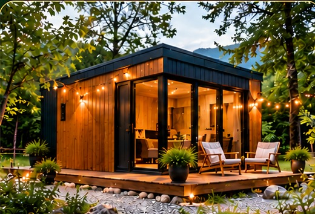
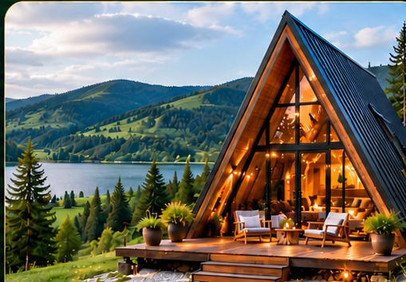
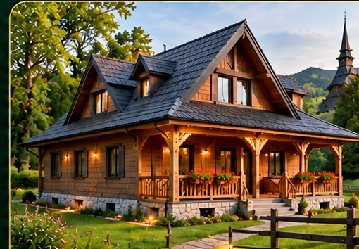
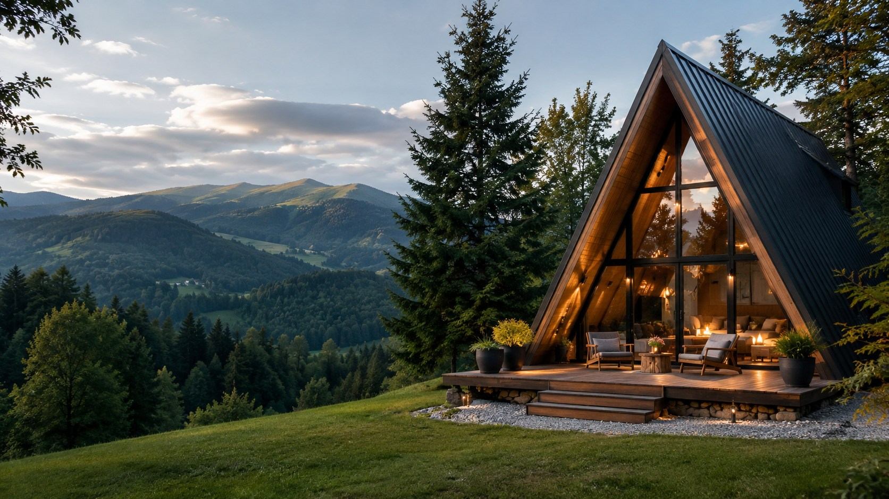
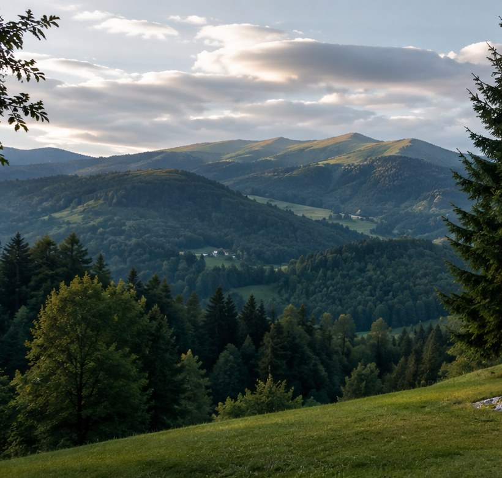

Tradiție și natură
Bucovina
Peisaje liniștite, sate autentice și tradiții care merită păstrate.
Descoperă farmecul locurilor autentice din România și urmărește povestea unui proiect turistic construit din pasiune pentru natură.

Quality Sky Tourism by Tudose este un proiect dedicat frumuseții României, turismului responsabil și experiențelor petrecute în mijlocul naturii.
Ne inspiră munții, pădurile, lacurile și comunitățile locale. Ne dorim să aducem mai aproape de oameni destinații deosebite și, în viitor, un concept de cazare în căsuțe A-frame.
Află mai multe despre viziune →Locuri pe care le admirăm și le explorăm ca inspirație pentru proiectul nostru turistic.

Peisaje liniștite, sate autentice și tradiții care merită păstrate.

Un loc care îmbină farmecul muntelui cu atmosfera de vacanță.

Tradiție reinterpretată modern, lemn natural și peisaje autentice.
Imaginile sunt concepte vizuale generate cu AI, nu fotografii ale unor unități de cazare existente.
Ne propunem să dezvoltăm în viitor un loc de cazare intim, integrat în natură, cu un design inspirat de arhitectura A-frame.

Imagini ilustrative care exprimă atmosfera pe care dorim să o construim.


Fotografii de atmosferă, folosite ca ilustrații. Nu reprezintă unități de cazare Quality Sky Tourism sau neapărat destinațiile numite.
Locul în care povestim despre România, turism și experiențele care merită împărtășite.
Un punct de plecare pentru a descoperi arhitectura, peisajul și farmecul satelor românești.
Citește povestea →Tradiții, legende și curiozități pe care merită să le cercetăm și să le povestim.
Descoperă →Arhitectură simplă, apropiere de natură și idei pentru viitorul proiectului QST.
Citește articolul →Vrei să urmărești dezvoltarea proiectului sau să discutăm despre o posibilă colaborare? Hai să vorbim!

Urmărește Quality Sky Tourism by Tudose pe Facebook și Instagram pentru noutăți despre proiect, inspirație și destinații turistice.
Proiectul nostru este în dezvoltare. Te așteptăm în comunitatea QST!